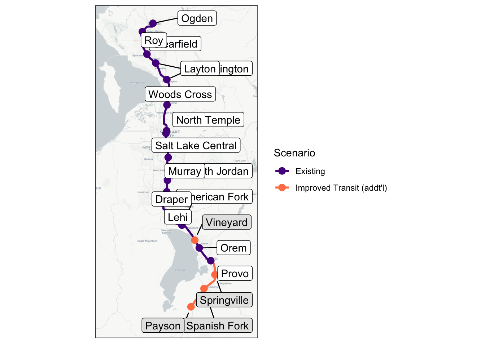
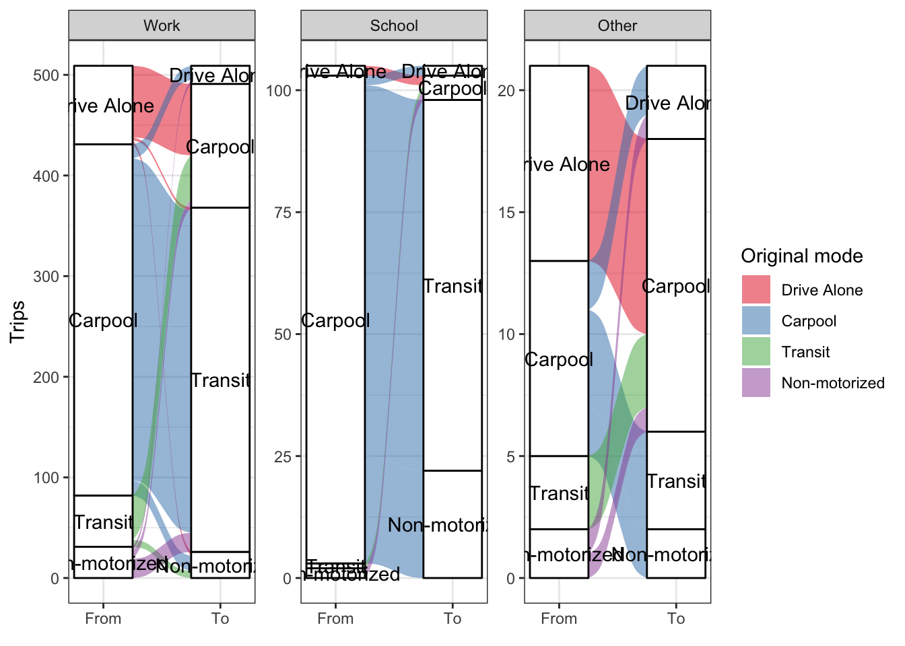
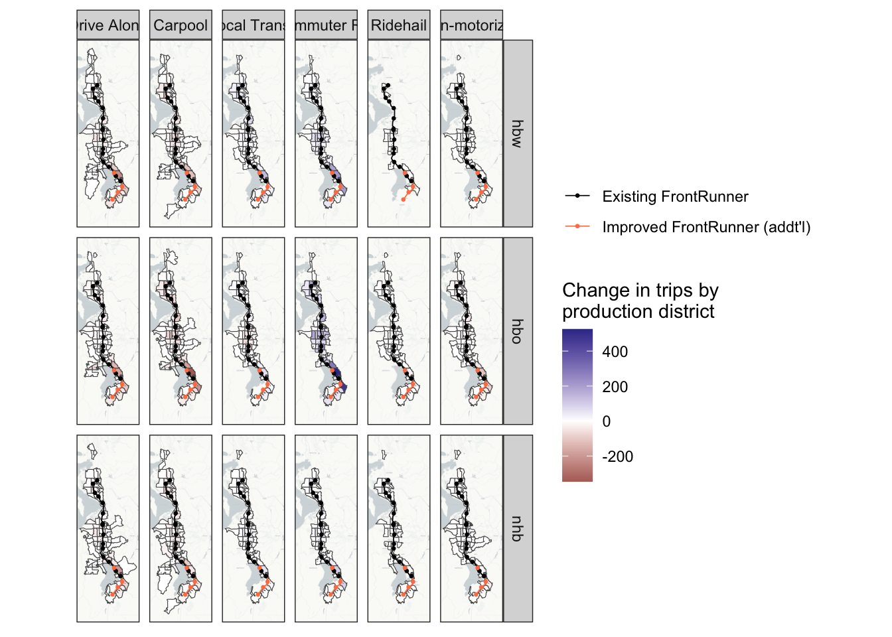
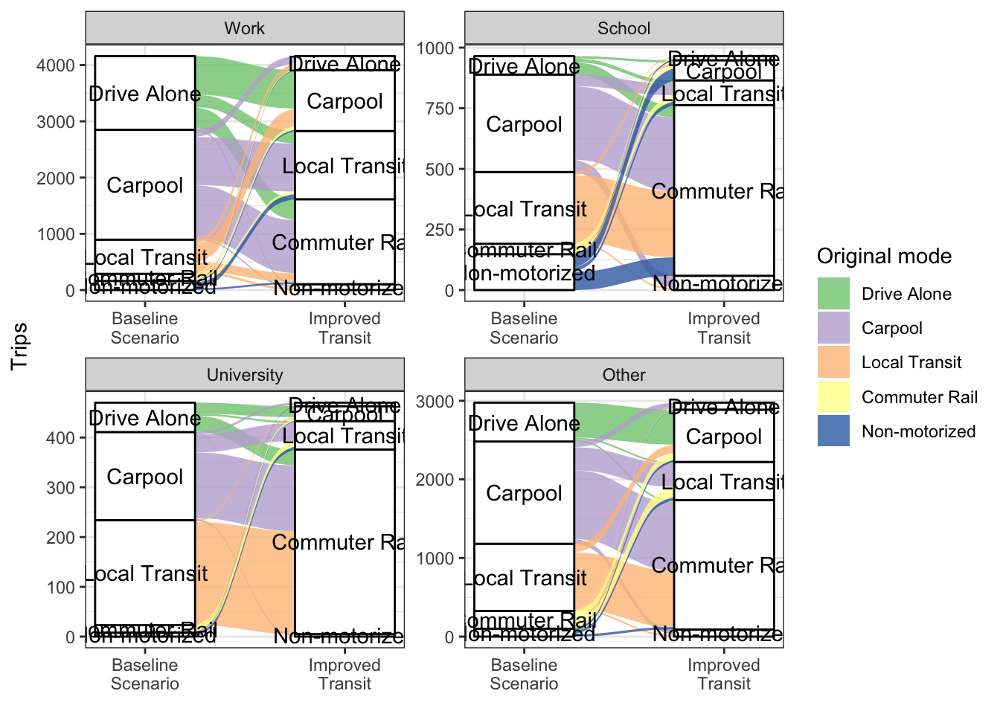
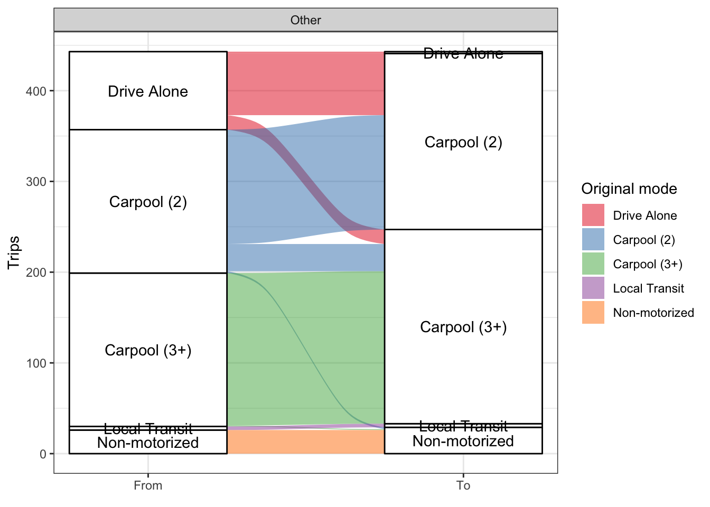
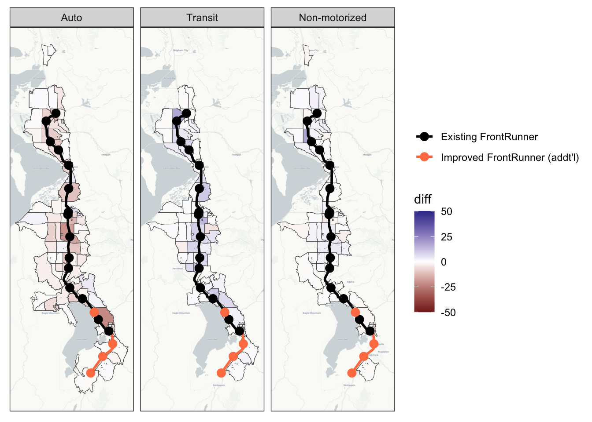

4 Scenario 2: Improved Transit Service
The FrontRunner is a commuter rail line between Provo and Ogden, Utah, with several stops in-between. Currently, there is only one set of tracks for much of the line, and train crossings are only possible near stations. Because of this, headways are quite large, with trains running every half-hour in peak periods and hourly in off-peak periods. Additionally, trains occasionally need to wait for each other in order to cross paths.
There is a planned improvement to the FrontRunner that would “double track” the entire route, allowing trains to pass each other at any point. This would allow for much smaller headways, which are currently planned at 15 and 30 minutes for peak and off-peak periods respectively (half of the current headways). The improvement would also partially electrify the FrontRunner, allowing for faster travel speeds, and extend the track farther south with additional stops.
This scenario models these planned improvements to the FrontRunner. The scenario adjusts the headways to 15/30 minutes for peak/off-peak service, increases travel speeds, and adds additional stops in Vineyard, Springville, Spanish Fork, and Payson. Figure 4.1 shows the FrontRunner network with the modeled changes. No other modifications were made to the baseline scenario; for example, a revised bus service network serving the Springville station (part of the actual transportation plan for the area) is not included.
4.1 Scenario Creation
In the WFRC model, this change is relatively easy to implement. The headways are stored directly in the input data and are easily modified, and a year-2050 network with increased speeds and additional stations is already built into the model for future-year analysis. The only additional change needed was to turn on the “park and ride” flag in the highway network at the node of each new station. Wasatch Front Regional Council (WFRC)
To implement this scenario in ActivitySim, only updated travel skims are needed. As in the baseline scenario, the transit skims output from the WFRC model’s network assignment in this model scenario are taken directly as inputs to ActivitySim. Because the mode share of transit is relatively low, it is not expected that the highway travel times will be affected very much by this change. The highway skims are therefore taken from the baseline scenario in the WFRC model and not updated for this scenario. No other changes to ActivitySim are necessary to model this scenario.
4.2 Scenario Analysis
One of the most straightforward analyses to perform for this scenario is a comparison of the mode split. Table 4.1 shows the number of trips by purpose and mode for each model, and compares these results between this scenario and the baseline scenario. Unsurprisingly, both models predict a significant increase in commuter rail trips. The models differ, however, in which modes the new commuter rail trips come from. ….
Purpose | WFRC Model | ActivitySim | |||||
|---|---|---|---|---|---|---|---|
Baseline Trips | Improved Transit Trips | Change | Baseline Trips | Improved Transit Trips | Change | ||
Home-based Work | Drive Alone | 1,328,609 | 1,326,191 | -0.2% | 1,012,180 | 1,010,565 | -0.2% |
Carpool | 257,783 | 256,654 | -0.4% | 258,459 | 256,550 | -0.7% | |
Local Transit | 37,935 | 36,494 | -3.8% | 232,222 | 233,426 | 0.5% | |
Commuter Rail | 10,821 | 15,891 | 46.9% | 19,846 | 22,265 | 12.2% | |
Ridehail | 1,108 | 1,099 | -0.8% | ||||
Non-motorized | 76,506 | 76,396 | -0.1% | 145,957 | 145,845 | -0.1% | |
Home-based Other | Drive Alone | 1,394,415 | 1,394,095 | 0.0% | 700,133 | 698,809 | -0.2% |
Carpool | 2,702,277 | 2,701,039 | 0.0% | 2,148,429 | 2,145,135 | -0.2% | |
Local Transit | 33,168 | 32,583 | -1.8% | 195,062 | 194,649 | -0.2% | |
Commuter Rail | 4,180 | 6,332 | 51.5% | 81,094 | 87,337 | 7.7% | |
Ridehail | 113,624 | 113,538 | -0.1% | ||||
Non-motorized | 510,143 | 510,103 | 0.0% | 613,134 | 611,996 | -0.2% | |
Non–home-based | Drive Alone | 951,561 | 951,407 | 0.0% | 716,143 | 714,854 | -0.2% |
Carpool | 1,273,279 | 1,272,977 | 0.0% | 938,056 | 936,408 | -0.2% | |
Local Transit | 12,213 | 12,068 | -1.2% | 107,526 | 108,395 | 0.8% | |
Commuter Rail | 1,243 | 1,806 | 45.3% | 12,317 | 13,344 | 8.3% | |
Ridehail | 40,092 | 40,061 | -0.1% | ||||
Non-motorized | 146,404 | 146,409 | 0.0% | 156,819 | 156,587 | -0.1% | |


One particularly interesting analysis that can be done with an ABM is to see who changed modes with the improved transit. Because trips are modeled individually rather than in aggregate, it is possible to identify trips that switch modes between the scenarios. Figure 4.2 shows the distribution of these “switched” trips, grouped by tour purpose. These are trips that are “the same” between scenarios and differ only by mode.
For the purposes of this analysis, trips are considered “the same” between scenarios if they share the following: person id, origin and destination zones, time of day1, and tour and trip purpose. Most of these trips also share the same mode, which is to be expected, but many do not. Figure 4.2 is filtered to show only trips that do not share the same mode between scenarios.
There is some amount of randomness in the way ActivitySim determines trip modes, though. This randomness is seen partly in trips that switch away from commuter rail despite the improved commuter rail service, as well as some trips that switch to modes other than commuter rail, especially to “Drive Alone”. Although, part of the switch from “Carpool” to “Drive Alone” can be explained as previously-carpool trips where all but one vehicle occupant switched to another mode, leaving one person in the vehicle for the trip. Overall, though, the randomness is not a significant percentage of the overall mode switching seen in Figure 4.2.

Mode choice is not the only step of ActivitySim affected by the improved transit service, however. In fact, there are many trips that do not have a match between scenarios, where origin, destination, time of day and/or purpose differ. The number of trips an individual makes may also differ between scenarios, as each person’s DAP is partially dependent on accessibility measures. Notably, Figure 4.2 also does not include any of these trips; the figure only shows trips which do have a match between scenarios.
ABMs also allow for even more granular analysis than shown in Figure 4.2. For example, Figure 4.3 shows the trip modes of at-work subtours made by individuals who switched their work tour mode away from “Drive Alone”. The figure shows the at-work subtour trip modes for all these individuals, not just those who also switched their at-work subtour trip modes. These results are essentially as expected. All trips that were “Drive Alone” in the baseline scenario switched to carpool, and there was virtually no mode switching otherwise, except a few trips that switched from Carpool to Non-motorized. This switching can again be largely explained by the randomness in ActivitySim’s mode choice models, and again is relatively insignificant.

Analyzing this with the trip-based model was straightforward since one of the outputs is a file listing the amount of trips made by each form of transit. There are also more detailed matrices that shows commuter rail transit (CRT) trip productions and attractions. There is a matrix for driving to the CRT and a matrix for walking to the CRT. With these matrices and the taz shape file, we were able to to visualize the catchment area in a plot like (another figure that we can show)
Implications: We saw that there was more than a 30% increase in commuter rail transit trips in this scenario but not much change in the other transit trips. We could see the areas where peoples’ CRT trips began on a zonal and a district level and noticed a big increase in the people coming from zones that were closer to the new stations that were part of the extended rail line. (I think more can be added here as well)
Limitations: Apart from the increase in CRT trips and the catchment areas, there wasn’t much more we could see with the trip-based model. By connecting the catchment areas with what we know of the zonal SE data, we could make some assumptions about the income of the new people taking the commuter rail, but we couldn’t find anything more about the demographics of the riders.
purpose | transit_trips | TOTHH | ALLEMP | med_income |
|---|
purpose | transit_trips | income | age |
|---|---|---|---|
hbw | 256,790 | 79,647.82 | 37 |
hbo | 395,524 | 70,783.23 | 33 |
nhb | 161,800 | 69,411.20 | 36 |

ActivitySim also has an “at-work” tour purpose, indicating a subtour from the workplace. The team analyzed the trip modes of these subtours for the individuals who switched to transit for their work tour. Figure 10 shows that most people did not switch subtour modes from the base scenario. The similar number of switches between auto and non-motorized modes indicates that the switching here may be mostly due to ActivitySim’s randomness and not any changes in the network.
ActivitySim models time of day as the “departure hour” for each trip. If two trips share the same departure hour, they are considered here to have happened at the same time.↩︎